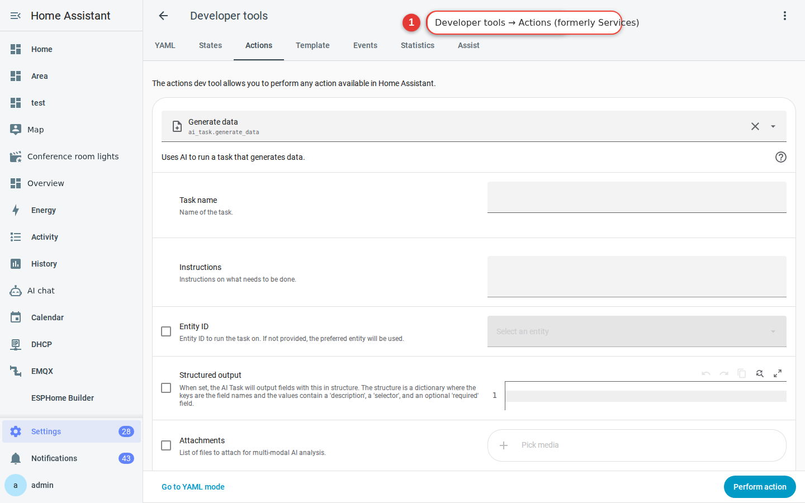

Notifications
Install the Home Assistant Companion App, connect your phone, and send your first test notification. By the end of this chapter, you will have completed the last mile between Home Assistant noticing something and telling you about it.
Why notifications matter
- The washing machine finishes → your phone chimes.
- A door is left open → you get a reminder once you are 100 metres from home.
- Power returns after an outage → you find out even while you are at work.
- A camera detects a person → the notification includes a thumbnail.
The Companion App delivers these notifications and is also the most convenient way to use Home Assistant day to day.
In this chapter, you will trigger a notification manually as a test. Chapter 8 shows you how to add notifications to automations—for example, “Send a notification when the washing machine stops” or “Turn on the lights and send a notification when someone arrives home.”
Install the Companion App
-
Search for “Home Assistant” in your phone’s app store
iOS: Search the App Store for Home Assistant (the developer is Home Assistant).
Android: Search Google Play for Home Assistant Companion. -
Open the app and select “Log in to Home Assistant”
The app will scan your local network for a Home Assistant server. Select the server if it appears; otherwise, enter
http://homeassistant.local:8123or your own Home Assistant URL.
What else do you get after installing the app? In addition to push notifications, the Companion App automatically sends data such as your phone’s battery level, location, Wi-Fi network name, and Bluetooth sensor readings to Home Assistant. These appear as entities such as sensor.yourname_battery_level and device_tracker.yourname_phone. You can later use them to turn on the lights when you arrive home or send a reminder when the battery falls below 20%.
Sign in with the account you just created
-
Enter your username and password
Use the personal account you created in Chapter 5, not a shared administrator account. This allows notifications to be directed to your phone.
-
Allow the app to access the required features
The app will request access to notifications, location, Bluetooth, camera, and other features. We recommend enabling at least:
- Notifications — Essential for this chapter; make sure they are enabled.
- Location (Always) — The key to automations that detect when you arrive home or leave.
iOS note: The “Always” location option must be enabled in iOS Settings. During your first sign-in, you may only be able to select “While Using the App”; afterwards, return to Settings and change the permission to “Always.” -
Home Assistant automatically adds your phone and its sensors
In the Home Assistant web interface, go to Settings → Devices & services. A new device named after your phone—for example, “Alex’s iPhone”—will appear with dozens of sensors for battery level, charging state, Wi-Fi network name, Focus mode, and more.

Figure 7-1 Home Assistant automatically adds the phone’s sensors after the mobile app registers.
Send your first notification
service: key has accordingly been replaced by action: in current YAML.-
Go to Settings → Tools → Actions
In the Home Assistant web interface, select Settings in the sidebar, select Tools, and then open the Actions tab.
-
Select
notify.mobile_app_XXXin the action fieldXXX is the name of the phone you just connected. The Companion App creates this action automatically.

Figure 7-2 The action interface under Settings → Tools. This screenshot shows the former Developer Tools interface. Notification action naming convention:
notify.mobile_app_<device name>. Non-alphanumeric characters in the device name become underscores. For example, iPhone 13 Pro Max becomesnotify.mobile_app_iphone_13_pro_max. To find your phone, search fornotify.mobile_appin the action list under Settings → Tools → Actions. -
Enter a message and title
Try this simple test:
action: notify.mobile_app_xxx data: title: "Test notification" message: "First message from HA"
-
Select “Perform action”
Your phone should chime immediately. Congratulations—your smart home now has a voice.
Advanced: Add action buttons to a notification
A notification can include buttons for you to select instead of displaying static text only:
action: notify.mobile_app_xxx
data:
title: "Someone rang the doorbell"
message: "Tap an action below to choose whether to open the door."
data:
actions:
- action: "OPEN_DOOR"
title: "Open door"
- action: "IGNORE"
title: "Ignore"
Then configure an automation to listen for the mobile_app_notification_action event. When it receives action: "OPEN_DOOR", the automation can run the action that opens the door, wherever you are in the world. Anything that unlocks or opens an entrance is security-sensitive, so add appropriate safeguards before enabling it.
- Android allows no more than 3 action buttons in a notification; iOS supports about 10, but you may need to expand the notification to see the additional buttons. For cross-platform notifications, use no more than 3.
- Action IDs must be globally unique. If two doorbells both use
action: OPEN_DOOR, selecting either notification will trigger the same automation. To prevent this, incorporate{{ context.id }}or prefix the ID with the device or location name—for example,action: OPEN_DOOR_FRONT.
Tags and groups: Manage multiple notifications
tag: laundry: A later notification with the same tag will replace the previous one—for example, as the washing machine moves from washing to spinning to complete.group: security: Notifications in the same group will be stacked together, so doorbell and alarm notifications can appear in one stack.
Frequently asked questions
Why did my notification not arrive?
Can I notify every phone in the household?
notify.notify action sends to its configured notification targets, so verify those targets before using it. Alternatively, create a named notification group for specific recipients.Can I send notifications by email, Slack, or Telegram?
Troubleshooting
My phone does not receive notifications
notify.mobile_app under Settings → Tools → Actions and confirm that your phone is listed.My iOS notification arrives without sound
push: and sound: in the notification data.